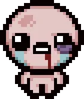
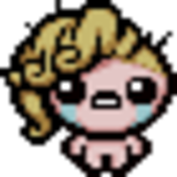
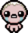

The Binding of Isaac es un videojuego de rol de acción basado en la generación de mazmorras y objetos para el jugador, requiriendo eliminar un jefe final para acabar una partida correctamente. los jugadores en su aventura deben enfrentar monstruos y demonios usando sus propias lágrimas como proyectiles.
creado como concepto por Edmund McMillen como un proyecto secundario mientras seguía trabajando en Meat Boy junto con Tommy Refenes. Siendo Isaac, los jugadores en su aventura deben enfrentar monstruos y demonios usando sus lágrimas. El videojuego fue creado usando Adobe Flash, programado por Florian Himsl, mientras McMillen dibujó todos los sprites del juego.
Inspirado en la historia bíblica del sacrificio de Isaac, la historia cuenta como Isaac intenta huir de su propia madre, siendo que ella cree que Dios le ha comandado a sacrificar a su hijo. The Binding of Isaac contiene una atmósfera oscura y humor escatólogico. Isaac tiene que atravesar todo tipo de lugares para huir mientras combate todo tipo de monstruos - desde demonios hasta pilas de popo vivas con caras sonrientes. Todo esto combinado como múltiples referencias a otras series de videojuegos y demás, y alusiones a trabajos previos de Edmund.
The Binding of Isaac es un videojuego de rol donde una mazmorra es generada aleatoriamente por partida. Pero The Binding of Isaac actúa como un juego de disparos en vez de ser un rol por turno. Isaac se mueve usando la palanca izquierda (o WASD) mientras que se dispara con la palanca derecha (o las flechas), permitiendo una movilidad más libre mientras se dispara. En el trascurso de la partida, el jugador es capaz de colectar llaves, bombas, monedas, y más objetos.

"The Binding of Isaac Wrath of the Lamb" Fue creado una expansión para para expandir el juego aún más. Se había decidido un otra expansión adicional para The Binding of Isaac, pero no fue posible debido a que el motor Adobe Flash no era capaz de soportarlo.
En vez cuando se vio la oportunidad mientras se negociaba con Nicalis de producir una portación de Super Meat Boy, se terminó en vez en una adaptación de The Binding of Isaac usando esta vez un nuevo motor creado desde cero para continuar con la producción de The Binding of Isaac.

Posteriormente anunciado oficialmente por el propio Edmund McMillen, The Binding of Isaac: Rebirth, sería la adaptación del juego original con el nuevo motor. Rebirth no solo sería una adaptación incluyendo todo lo que se había visto en Wrath of the Lamb, pero desde el lanzamiento ya se ha añadido incluso más contenido, además de un cambio de estilo, pasando de los dibujos de McMillen a un arte basado en pixel art. Después de gran éxito que generó Rebirth, se decidió producir más expansiones para este.

Esta adaptación se lanzó con gran éxito de la crítica. Los críticos alabaron su jugabilidad y sus mejoras con respecto al Binding of Isaac original, pero criticaron sus imágenes gráficas.
En este DLC se agregaron mas cosas en las que se enumeran las siguientes

La expansión Afterbirth+ (pronunciado Afterbirth Plus) es un DLC para The Binding of Isaac: Rebirth. Salió a la venta el día 3 de enero del 2017. Es requerido Rebirth y también Afterbirth para poder tener Afterbirth+. Entre sus principales características se encuentran:

The Binding of Isaac: Repentance es una expansión que fue confirmada por Edmund en su cuenta de Twitter, siendo esta la tercera y verdadera última expansión para Rebirth. Repentance contiene principalmente el mod Antibirth, añadido oficialmente al juego original, y mucho nuevo contenido.
Antes de su salida, Edmund escribió que Repentance no tenía fecha de salida, hasta el 2 enero del 2021 que hizo un tweet que confirmo la salida para el 31 de marzo y añadió que tendrá nueva banda sonora, escenas, historia y de más. La expansión cuesta dinero como las otras. La Demo de Repentance fue jugable en PAX West 2018, anunciada con el teaser del juego y un tweet.
| Objetos iniciales | utilizables | Contenedores de vida | Velocidad | Velocidad de lagrimas | Daño | Rango | Lagrimas | Suerte |
| El D6 | Monedas=0, Bombas=1, Llaves=0 | 3 Corazones Rojos | 1.00 | 2.73 | 3.50 | 6.50 | 1.00 | 0.00 |
Tainted Isaac es desbloqueable luego de llegar a "Home" con la Red Key, Cracket Key o Soul Of Cain
| Objetos iniciales | utilizables | Contenedores de vida | Velocidad | Velocidad de lagrimas | Daño | Rango | Lagrimas | Suerte |
| Ninguno, a diferencia de Isaac esta version solo puede llevar hasta 6 items | Monedas=0, Bombas=1, Llaves=0 | 3 Corazones Rojos | 1.00 | 2.73 | 3.50 | 6.50 | 1.00 | 0.00 |
| Objetos iniciales | utilizables | Contenedores de vida | Velocidad | Velocidad de lagrimas | Daño | Rango | Lagrimas | Suerte |
| Yum Heart | Monedas= 0, Bombas= 0, Llaves=0 | 4 | 0.85 | 2.73 | 3.50 | 6.50 | 1.00 | 0.00 |
Tainted Magdaline es desbloqueable luego de llegar a "Home" con la Red Key, Cracket Key o Soul Of Cain
| Objetos iniciales | utilizables | Contenedores de vida | Velocidad | Velocidad de lagrimas | Daño | Rango | Lagrimas | Suerte |
| Yum Heart pasa a ser un item de Slot | monedas=0, Bombas=0, Llaves=0 | 2 contenedores rojos, 2 contenedores vacios | 1.00 | 2.73 | 2.62 | 6.50 | 1.00 | 0.00 |

| Objetos iniciales | Trinkets | utilizables | Contenedores de vida | Velocidad | Velocidad de lagrimas | Daño | Rango | Lagrimas | Suerte |
| Lucky Foot | Paper Clip | Monedas=0 Bombas=0 Llaves=1 | 2 | 1.30 | 2.73 | 4.20 | 4.50 | 1.00 | 1.00 |
Tainted Cain es desbloqueable luego de llegar a "Home" con la Red Key, Cracket Key o Soul Of Cain

| Objetos iniciales | Trinkets | utilizables | Contenedores de vida | Velocidad | Velocidad de lagrimas | Daño | Rango | Lagrimas | Suerte |
| se obitene el Bag of Crafting en item de slots | n/a | Monedas=0 Bombas=0 Llaves=1 | 2 | 1.30 | 2.73 | 4.20 | 4.50 | 1.00 | 1.00 |
| Objetos iniciales | Trinkets | utilizables | Contenedores de vida | Velocidad | Velocidad de lagrimas | Daño | Rango | Lagrimas | Suerte |
| The Book of Belial | N/A | 3 Monedas, 0 Bombas, 0 Llavas | 1 Contenedor de Vida Rojo | 1.00 | 2.73 | 4.72 | 6.50 | 1.00 | 0.00 |
Tainted Judas es desbloqueable luego de llegar a "Home" con la Red Key, Cracket Key o Soul Of Cain

| Objetos iniciales | Trinkets | utilizables | Contenedores de vida | Velocidad | Velocidad de lagrimas | Daño | Rango | Lagrimas | Suerte |
| N/A | Dark Arts | 3 Monedas, 0 Bombas, 0 Llaves | 2 Corazones Negros | 1.23 | 2.73 | 3.50 | 4.50 | 1.00 | 0.00 |
| Objetos iniciales | Trinkets | utilizables | Contenedores de vida | Velocidad | Velocidad de lagrimas | Daño | Rango | Lagrimas | Suerte |
| The Poop | n/a | 0 Monedas, 0 Bombas, 0 Llaves | 3 Corazones de Alma | 1.10 | 2.73 | 3.67 | 6.50 | 1.00 | 0.00 |
Tainted ??? es desbloqueable luego de llegar a "Home" con la Red Key, Cracket Key o Soul Of Cain

| Objetos iniciales | Trinkets | utilizables | Contenedores de vida | Velocidad | Velocidad de lagrimas | Daño | Rango | Lagrimas | Suerte |
| n/a | Hold | 0 Monedas, 3 Cacas Explosivas, 0 Llaves | 3 Corazones de Almas | 0.90 | 2.04 | 3.50 | 6.50 | 1.00 | 0.00 |

| Objetos iniciales | Trinkets | utilizables | Contenedores de vida | Velocidad | Velocidad de lagrimas | Daño | Rango | Lagrimas | Suerte |
| "Razor Blade", "Whore of Babylon" y "Dead Bird" | n/a | 0 Llaves, 0 Bombas, 0 Llaves | 2 Corazones Rojos | 1.23 | 2.73 | 2.63 | 6.50 | 1.00 | 0.00 |
Tainted Eve es desbloqueable luego de llegar a "Home" con la Red Key, Cracket Key o Soul Of Cain
.webp)
| Objetos iniciales | Trinkets | utilizables | Contenedores de vida | Velocidad | Velocidad de lagrimas | Daño | Rango | Lagrimas | Suerte |
| n/a | Sumptorium | 0 Monedas, 0 Bombas, 0 Llaves | 2 Corazones Rojos | 1.00 | 1.20 | 4.20 | 6.50 | 1.00 | 0.00 |
| Objetos iniciales | Trinkets | utilizables | Contenedores de vida | Velocidad | Velocidad de lagrimas | Daño | Rango | Lagrimas | Suerte |
| Bloody Lust | n/a | 0 Monedas, 0 Bombas, 0 Llaves | 3 Corazones Rojos | 1.10 | 2.50 | 3.50 | 5.00 | 1.31 | 0.00 |
Tainted Sanson es desbloqueable luego de llegar a "Home" con la Red Key, Cracket Key o Soul Of Cain

| Objetos iniciales | Trinkets | utilizables | Contenedores de vida | Velocidad | Velocidad de lagrimas | Daño | Rango | Lagrimas | Suerte |
| Blood Lust + Berserk | n/a | 0 Monedas, 0 Bombas, 0 Llaves | 3 Corazones Rojos | 1.00 | 2.50 | 3.50 | 5.00 | 1.00 | 0.00 |

| Objetos iniciales | Trinkets | utilizables | Contenedores de vida | Velocidad | Velocidad de lagrimas | Daño | Rango | Lagrimas | Suerte |
| Brimstone | la carta "0-The fool" | 0 Monedas, 0 Bombas, 0 Llaves | 3 Corazones Negros | 1.25 | 0.86 | 5.25 | 4.50 | 1.00 | 0.00 |
Tainted Azazel es desbloqueable luego de llegar a "Home" con la Red Key, Cracket Key o Soul Of Cain

| Objetos iniciales | Trinkets | utilizables | Contenedores de vida | Velocidad | Velocidad de lagrimas | Daño | Rango | Lagrimas | Suerte |
| Mantiene su Brimstone pero mas delgado | carta "0 - The fool" | 0 Monedas, 0 Bombas, 0 Llaves | 3 Corazones Negros | 1.00 | 0.91 | 5.25 | 6.50 | 1.00 | 0.00 |
Lazarus es un personaje que se desbloquea al tener cuatro o más Soul Hearts (o Black Hearts) a la vez durante una Run

| Objetos iniciales | Trinkets | utilizables | Contenedores de vida | Velocidad | Velocidad de lagrimas | Daño | Rango | Lagrimas | Suerte |
| n/a | Pildora aleatoria | 0 Monedas, 0 Bombas, 0 Llaves | 3 Corazones rojos (una vida extra) | 1.00 | 2.73 | 3.50 | 4.50 | 1.00 | -1.00 |
Lazarus Revivido contiene los mismos stats que Lazarus pero con un contenedor de vida menos y un cambio de estilo al personaje

Tainted Lazarus es desbloqueable luego de llegar a "Home" con la Red Key, Cracket Key o Soul Of Cain

| Objetos iniciales | Trinkets | utilizables | Contenedores de vida | Velocidad | Velocidad de lagrimas | Daño | Rango | Lagrimas | Suerte |
| Flip | n/a | 0 Monedas, 0 Bombas, 0 Llaves | 3 Corazones Rojos | 1.00 | 2.73 | 3.50 | 4.50 | 1.00 | 0.00 |

Tainted Lazarus comienza con 3 corazones rojos, mientras que Dead Tainted Lazarus comienza con 2 corazones de alma.
Tainted Lazarus comienza con un alcance bastante bajo, mientras que Dead Tainted Lazarus tiene un multiplicador de daño de 1,5 veces, lágrimas y velocidad ligeramente más bajas y -2 suerte. Cada personaje tiene elementos, atributos, baratijas y consumibles separados.
Eden es Desbloqueable tras matar a "The Womb" por primera vez
| Objetos iniciales | Trinkets | utilizables | Contenedores de vida | Velocidad | Velocidad de lagrimas | Daño | Rango | Lagrimas | Suerte |
| ??? | ??? | ??? | ??? | ??? | ??? | ??? | ??? | ??? | ??? |